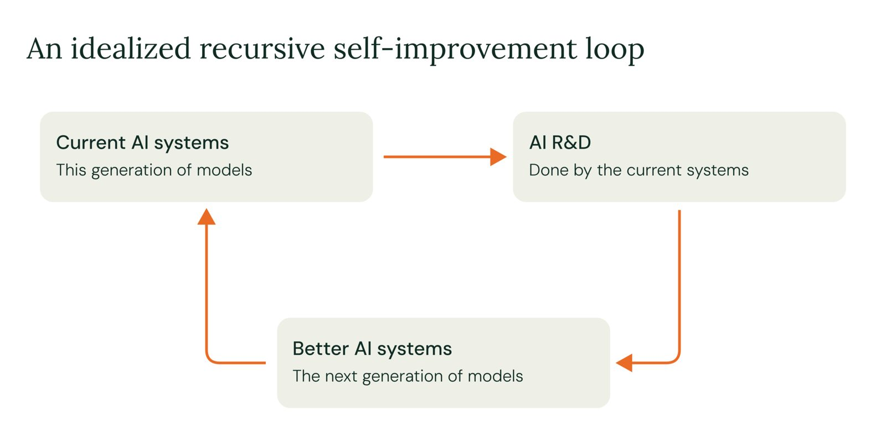

RSI 全景 · 2026 年 11 月
递归自我改进(Recursive Self-Improvement)这个领域现在走到哪了:前沿实验室怎么说、云厂商在卖什么、企业怎么用。整理于 2026-11-16,覆盖到 2026-11-15 的公开资料。
① RSI 是什么:权威定义和大图
这一节的定义和图都来自原文,不是这一页自己画的。每张图下面写了出处和授权。
定义:Anthropic 的说法
原文:「Taken far enough, and given enough compute, that trend points to an AI system capable of fully autonomously designing and developing its own successor. This is called recursive self-improvement. We are not there yet…」—— Anthropic Institute · When AI builds itself
同一页给出了 Anthropic 内部从「人写代码」走到「闭合回路」的时间线(按原文翻译):
图 1:最简单的 RSI 回路

出处:Forecasting Research Institute,How Close is Recursive Self-Improvement? A Review of the Evidence(2026-11-10),Figure 1。版权归原作者,此处引用并注明出处。
图 2:为什么可能「越转越快」

出处:Chan, Winter, Barto, Pachocki, Hinton, Horvitz, Bengio, Clark, Clune 等,What if automating AI R&D triggers an intelligence explosion?(arXiv 2609.36054,2026),Figure 2。授权 CC BY 4.0。
图 3:在「AI for X」里的位置 —— AI for AI
放在「AI for X」里看,RSI 属于 X = AI 自己的那一类,学界叫 AI for AI(AI4AI)。AI4AI 综述的定义是:AI 正在改变 AI 本身的开发方式,从设计学习算法、到自动化研究流程和评测;它按「发现循环里三个决定交给谁」来分级 —— 搜索方向、搜索空间、评测信号;并且写明「AI4AI 可能带来递归自我改进」。

出处:Liu, Wang, Hu 等(南开、中关村学院、西安交大、上海交大、南洋理工、新加坡国立、港科大),AI4AI: Toward AI-discovered Superintelligence,Figure 1。版权归原作者,此处引用并注明出处。
和别的 X 比,有两点不一样:回路是闭合的(改的是 AI 自己,改好的接着改下一轮);它会放大所有别的 X(AI 变强,for Science、for Math、for Code 都跟着变强)。图 2 里那条箭头写的就是「Improves & Multiplies」(改进并放大),所以它更像一个「乘数」,而不是又一个应用方向。
图 4:怎样才算 RSI,而不只是「多迭代几轮」

出处:Li, Chen, Zhang 等(哈工大深圳、港大、新加坡国立等),Towards AI That Improves Itself: A Survey of Recursive Self-Improvement,Figure 3。版权归原作者,此处引用并注明出处。
图 5:RSI 的五级自主,和各级的代表系统

出处:Tang, Zhou 等(字节跳动、面壁智能、小红书、上海 AI Lab、清华等),The Last AI Built by Humans: Toward Genuine Recursive Self-Improvement(arXiv 2609.11873),Figure 1。授权 CC BY-NC-ND 4.0(原图未改动)。
论文对五级的定义(按原文概括):
| 级 | 论文定义 | 对照今天的云产品 判断 |
|---|---|---|
| L1 执行 | AI 执行人定好的改进流程 | 按固定流程跑的评测 / 微调流水线 |
| L2 策略 | AI 自己选改进手段,目标和验收标准仍由人定 | Foundry Agent Optimizer、AgentCore optimization:人给目标和打分,AI 选改法,改好的配置留下来当新基线 |
| L3 经验 | AI 自己决定去获取什么经验 / 数据 | 自己造任务、造环境的研究系统 |
| L4 部署 | AI 在真实部署环境里自己适应、改进 | 暂无成型的云产品 |
| L5 元改进 | AI 改进「怎么改进」本身 | HyperAgents 等研究;没有产品 |
注意:图 5 把 AlphaEvolve 放在 B0(只在一次任务里反复改答案,不算 RSI)。因为它改的是你给的算法代码,不是改进它自己;只有把 AlphaEvolve 用来改 AI 自己的东西(比如 Google 用它改训练内核、改 agent 的 skill),而且改好的结果留下来进入下一轮,才往 RSI 靠。这也是图 4 那句话的意思:只靠迭代不是 RSI。
② 这一个月发生了什么(2026-10-15 ~ 11-15)
前沿实验室:都承认「AI 在加速 AI」,但说法很克制
- Google:Sergey Brin 在 Gemini 4 Argon 的圆桌上说,Google「开始踏上 RSI 的跑步机」,研究员和模型一起做下一版模型。但 Google DeepMind 自己的 Argon 安全报告写的是:没有看到显著的端到端 AI 研发加速,风险「目前低」。报告里的数字:生产代码超过 75% 由 AI 写;完全交给 AI 的 PR 从 4 月的 7.5% 涨到 9 月的 11.9%;约 88% 仍需要人反复引导。二手 · TNW 转述安全报告
- Anthropic(由 METR 独立评估):METR 在 2026-08-12 到 10-29 进驻 Anthropic 做了一次高权限评估。结论:截至 10 月,Anthropic 在「定义清楚的任务」上提升模型能力的速度,大约是 2024-03 到 2025-10 的 2 倍(不确定性大,真实值可能在 1.3 到 3 倍之间),而且大部分加速可能来自 Anthropic 大量用 AI 做研发。大部分证据被 Anthropic 涂黑了,METR 自己也说外界只能信它的判断。一手 · METR 2026-11-05
- OpenAI:9 月说已经达到「自动化研究实习生」的目标(能在人指导下完成几天量的研究任务),下一个目标是 2028 年 3 月做出自动化 AI 研究员。同时明确写:在能安全做到之前,不应该追求完全自主的 RSI。一手 · OpenAI 2026-09-06 / 09-09
- Recursive(创业公司):10-21 发布第一个模型 Flint(40B 总参数,每个 token 约 2.5B 激活,Apache 2.0 开源)。公司说数据、训练配方、架构、芯片内核代码几乎都由它的自动研究系统 Eureka Machine 完成,小团队不到 4 个月做完。自测 SWE-bench Verified 74.2%(媒体未独立验证)。联合创始人有 Richard Socher(CEO)、田渊栋、Tim Rocktäschel、Jeff Clune 等 8 人,Peter Norvig 是顾问,估值 46.5 亿美元。一手 · WIRED / TNW / TechCrunch
研究:harness 层论文爆发,重点都在「怎么验证」
- 微软研究院 · Self-HPO:编码 agent 先分析自己的失败、提出新 harness,再在新 harness 下用强化学习更新模型,两步轮流。Qwen3.5-35B-A3B 平均解题率 57.8% → 64.8%;两样一起改的收益大于分开改的收益之和。一手 · 摘要
- 微软研究院 · HarnessMM:让 harness 记住「已经定下来的决定」,别每次工具返回都重新想一遍。HumanEval 上 Codex 成功率不变(90.82%),每题 token 少 29.5%。一手 · 摘要
- 微软研究院等 · Épi:能跨会话持续做研究、靠经验改进方法的 agent,由固定的验证器打分,刷新了 120 项数学纪录。一手 · 摘要
- NVIDIA · SoL-Pi:在 535 个可执行环境里,AI 研究 agent 观察另一个 agent 的轨迹,提出 152 个 harness 改进想法,只有 4 个活下来;token 少约 45%~49%,得分保留约 94%。关键护栏:能力底线事先定好,被优化的一方看不到也改不了;留出集结果绝不回流。二手 · Tony Bai 解读
- Google Research · SwarmEvolve(2611.08483):几百个小 agent 在隐空间里搜索、共享 KV cache,用 Qwen3-8B 在 3 个问题上超过 AlphaEvolve 式搜索。二手
- 可信 RSI:TRUST(2611.10787)用在线多重假设检验控制「假进化」的比例;另有一篇《大模型时代的可信 RSI》综述(2610.35193);中科院自动化所、美团等也发了 Agent RSI 综述,把方向分成 prompt、记忆、skill、harness 四条线。二手 · 摘要转述
争论和政策
- Hinton、Bengio、OpenAI 首席科学家 Pachocki、微软的 Eric Horvitz 等人合写的论文认为:AI 几年内可能自动化大部分 AI 研发,可能引发「智能爆炸」,政策要尽快跟上。一手 · 摘要
- Forecasting Research Institute(11-10):按现在的趋势简单外推,2027–2028 年 AI 可能接手大部分 AI 研发任务;多个前沿模型一起预测,到 2030 年出现「能力一年猛涨」的概率约 40%。一手
- Dwarkesh Patel(11-13):认为 RSI 已经开始,和顶尖人类 AI 研究员一样强的 AI 中位数在 2028 年。二手
- 美国众议员 Ro Khanna 说要提出法案禁止自我改进 AI;国会里有几份类似提案。二手
③ 三家云厂商:竞争分析
先说结论:三家都把「agent 自动变好」做成了产品,而且形状几乎一样。差别在三处:有没有自己的「算法发现」引擎、研究和产品接得顺不顺、RSI 创业公司把算力放在谁家。
Google / Google Cloud:研究到产品链条最完整
- AlphaEvolve 已 GA(2026-07-09):DeepMind 的进化式代码优化 agent,挂在 Gemini Enterprise Agent Platform 上(Vertex AI 已改名为这个)。你给种子算法和打分函数,它用 Gemini 不断变异、评测、留下更好的版本。早期客户有 BASF、JetBrains、Kinaxis;Schrödinger 用它把分子模拟里两个瓶颈算法提速约 4 倍。一手
- 默认模型换成 Gemini 4 Argon(10-26 起),按 Argon 的 token 价计费。二手 · release notes 转载
- 用 AlphaEvolve 改 agent 的 skill(11-05 官方教程):把 SKILL.md 当成「程序」,让 Harbor 在 GKE 上跑真实编码任务来打分,每个候选和基线同时跑、看差值,最后在没见过的任务上复查。几轮迭代提升约 5%。—— 这就是「冻结模型、自动改 skill」的官方做法(按图 5 属于 L2:人定目标和打分,AI 选改法)。一手
- AlphaEvolve on Cloud Batch(SC26,11-13):一个蓝图把候选评测扇出到几百台机器,包括多节点 MPI,支持 Spot 降成本。一手
- Agent Compute Engine(10-22 发布,几个月后预览):给 agent 用的 microVM 沙箱,启动快、空闲自动暂停,官方明确说是为了「agent 循环或评测扫描不等基础设施」。一手
- RSI 生态:GV(Google Ventures)和 Greycroft 领投了 Recursive;Anthropic 出身的 Mirendil(自我改进 AI)签了 1 亿美元以上的 Google Cloud 算力协议。一手 · TechCrunch
- 判断短板:AlphaEvolve 的效果取决于你能不能写出好的打分函数,这一步 Google 帮不了你;深度绑定 Gemini;官方 skill 优化案例的提升只有 5%,说明只改 prompt / skill 的空间有限。
微软 / Azure:产品闭环做得细,研究很多但组织在变
- Foundry Agent Optimizer(Build 2026-06-03 发布,当时为私有预览,并说 30 天后进入公开预览):对托管 agent 做「评测基线 → 按失败生成候选 → 同一批任务重评 → 排名 → 一条命令上线」。能优化三样:指令、skill、模型选择。命令是
azd ai agent optimize,官方示例分数 0.60 → 0.92。一手 - 持续优化(09-24):Foundry 把这套叫「hill-climbing」—— 观察、评测、优化、验证、重复,人保持控制。一手
- 闭环参考方案(11-06):生产轨迹 → 人工复核标注 → Agent Optimizer 搜索 → 开 PR 给工程师审 → 留出回归集把关 → 灰度上线。一手 · 微软技术社区
- MAI(Mustafa Suleyman):6 月发布 7 个自研模型,说要建「超级智能实验室」和「hill-climbing machine」;10 月发布医疗诊断系统 MAI-DxO(论文发在 Science)。一手
- 研究院:这一个月 Self-HPO、HarnessMM、Épi 都是 harness / 研究 agent 方向;Eric Horvitz 也参与了「智能爆炸」那篇论文。一手
- 组织变化:研究院的 AI Frontiers(约 50 人,做过 AutoGen)9 月并入 MAI,联合创始人 John Langford 11 月离职,公开批评 MAI 只重规模、不重新方法。二手 · Neowin
- 判断短板:没有 AlphaEvolve 那样的「算法发现」托管服务;研究院的 RSI 论文和 Foundry 产品之间没有看到直接的连接。
AWS:评测和优化工具齐全,最大的 RSI 创业公司在这里
- AgentCore optimization(2026-05-04 预览,06-17 扩展):从生产轨迹里找出「静默失败」、用户意图和行为路径,自动给出 system prompt 和工具描述 的改进建议,打包成配置,先离线批量评测,再在真实流量上 A/B 测试,赢了才上线。一手
- AgentCore Evaluations(11-10 新文章):15 个内置评估器,再加托管运行的 DeepEval 和 AutoEval 评估器,轨迹级和会话级都能打分。一手
- UAEF(11-11):跨 LangGraph、Strands、AgentCore 等框架的统一评测,36 个指标 / 7 个维度,结果存 DynamoDB + S3,给下一轮改进用;电信、医疗、金融 12 家机构用过。一手
- Recursive 选了 AWS(2026-07-28):多年期 4.1 亿美元协议,AWS 是它自动 AI 研究系统的云服务商。目前最受关注的 RSI 创业公司的研究循环跑在 AWS 上。一手 · Amazon 新闻稿
- Bedrock 上有 Claude:METR 这次评估的就是 Anthropic,结论是 AI 正在明显加速它的研发;这家的模型能直接在 Bedrock 上用。
- 判断短板:公开资料里没找到对标 AlphaEvolve 的托管「算法发现」服务;AWS 自己在 RSI 方向的研究声量比 Google、微软小。但可以用开源引擎(OpenEvolve、ShinkaEvolve)+ Bedrock + AWS Batch 搭出等价方案 —— 本场 demo 就是这么做的。
放在一起看
| 维度 | Google Cloud | Microsoft Azure | AWS |
|---|---|---|---|
| 自动改 prompt / skill | AlphaEvolve + Harbor 改 skill(教程) | Foundry Agent Optimizer:指令、skill、模型 | AgentCore optimization:system prompt、工具描述 |
| 自动改代码 / 算法 | AlphaEvolve 托管服务,已 GA | 没有托管服务 | 没有托管服务,开源引擎 + Bedrock 自建 |
| 上线前怎么验证 | 和基线同跑看差值 + 留出任务 | 留出回归集 + PR 人审 + 灰度 | 离线批量评测 + 线上 A/B |
| 大规模评测算力 | Cloud Batch 扇出;Agent Compute Engine(待预览) | — | AgentCore Runtime;Batch / EC2 自建 |
| RSI 创业公司 | Mirendil(1 亿美元+);GV 领投 Recursive | — | Recursive(4.1 亿美元) |
| 自研前沿研究 | DeepMind:AlphaEvolve、SwarmEvolve | 研究院 Self-HPO 等;MAI 偏规模 | 声量小 |
「—」表示这次在公开资料里没找到,不代表一定没有。
从投资人的角度看这场竞争(谁投了谁、融资有多少流回哪朵云),见 跟着算力的钱走 · RSI 的资本视角。
给 SA 的打法 判断
- 别和 AlphaEvolve 比「谁的进化引擎更强」,要讲「验证和闭环」:AgentCore 的离线评测 + 线上 A/B,正好对上「能自我改进 ≠ 能自我验证」。
- 模型选择:Bedrock 上能用 Claude 和多家模型,评测时同一套任务换模型对比很方便。
- 标杆案例:Recursive 把自动 AI 研究跑在 AWS 上,这是目前最有说服力的「RSI 跑在哪」的答案。
- 遇到客户问 AlphaEvolve:用开源 ShinkaEvolve / OpenEvolve + Bedrock + AWS Batch 演示同样的循环,评测费用可以用 Spot 压下来(本场测算里评测占一轮成本的 97.7%)。
④ 行业实践:谁在用,怎么用
实验室内部:AI 写 AI 的代码
- Google DeepMind:生产代码超过 75% 由 AI 写,但代码改动仍要人审。二手
- OpenAI:研究员整天开多个编码 agent 并行干活;研究方向、取舍、是否上线仍由人决定。一手
- OpenAI + Scripps 等:几千个 GPT-Rosalind agent 并行分析几百万个小鼠脑细胞的数据,32 分钟完成,人工估计要几个月到一年。一手
企业:用在「能打分」的问题上
- 算法和代码优化:Schrödinger(分子模拟约 4 倍提速)、BASF、JetBrains、Kinaxis(供应链)用 AlphaEvolve。一手
- agent 质量:电信、医疗、金融 12 家机构用 UAEF 在上线前比较 agent 版本。一手
- 医疗:微软 MAI-DxO 在急诊常见病例上的诊断准确率是医生的 1.7 倍(微软自己的评测)。一手
大家收敛出来的做法
生产轨迹 ──→ 找失败 / 抽样成数据集(人复核标注)
──→ 生成候选改动(prompt、skill、工具、代码、模型选择)
──→ 和基线同时跑同一批任务,看差值
──→ 留出集复查(搜索过程从没见过的题)
──→ 能力底线 + 成本上限 都过了才算赢
──→ PR 人审 / 灰度 / A/B ──→ 上线,成为新基线
落地清单(来自 Google 教程、微软参考方案、AWS 文章、NVIDIA SoL-Pi 和本场 demo):
- 先有评测,再谈自我改进。没有可信的分数,优化器只会学会刷分。
- 候选和基线同时跑,比差值,不比绝对分 —— agent 分数噪声很大,Google 发现延迟就能解释大部分分差。
- 留出集只用一次,结果不回流给优化器。
- 能力底线事先写死,被优化的一方看不到、改不了;防止「早收工、跳过验证」这种省 token 的作弊。
- 成本也算进分数:评测是最贵的部分。
- 人留在上线这一步:三家产品都把「开 PR / 人审 / 灰度」放在最后。
⑤ 风险和没解决的问题
- 自我评判不可靠:有研究(如字节 Seed 的 Self-Developing Agents,见资料包 · 国内成果)发现 agent 对自己「下一轮能不能变好」的判断几乎预测不了结果,必须靠外部验证器。
- 刷分和泄漏:优化器会找评测的漏洞,所以要隐藏题、换说法重考、泄漏审计。
- 透明度:最关键的证据(实验室内部的加速数据)大多不公开,METR 的评估里大部分证据被涂黑。
- 人在哪一步介入:SoL-Pi 论文自己也承认,开放循环里目标和实现的漂移,可能在人发现之前就已经积累。
- 政策:美国已有禁止自我改进 AI 的提案;OpenAI 呼吁建立「什么时候该慢下来或停下」的共同标准。
⑥ 接下来看什么 判断
- 自动改 prompt / skill 会变成标配:「从轨迹自动改 prompt / skill」三家都有了,接下来拼的是评测质量和使用门槛。
- 自动改代码 / 算法是下一个战场:Google 有 AlphaEvolve,微软和 AWS 暂时没有对应的托管服务,看它们会不会补上。
- 评测算力是新的卖点:评测占了 RSI 的大部分成本,能便宜、安全、大规模地跑 agent 沙箱的云更有优势(Google 已经推出 Agent Compute Engine)。
- RSI 创业公司的算力订单:Recursive 在 AWS、Mirendil 在 Google Cloud,这类订单会越来越多。
- 要看的指标:实验室公布的「完全交给 AI 的 PR 比例」、METR 这类第三方评估、Epoch 能力指数是否出现「一年猛涨」。
⑦ 来源
定义和大图(第 ① 节)
- Anthropic Institute · When AI builds itself(定义 + 时间线)
- Forecasting Research Institute · How Close is RSI?(图 1)
- Chan et al. · What if automating AI R&D triggers an intelligence explosion?(图 2,CC BY 4.0)
- AI4AI: Toward AI-discovered Superintelligence(图 3,PDF)
- Towards AI That Improves Itself: A Survey of RSI(图 4,PDF)
- The Last AI Built by Humans: Toward Genuine RSI(图 5,CC BY-NC-ND 4.0)
前沿实验室和争论
- METR · Independent Assessment of AI R&D Acceleration at Anthropic(2026-11-05)
- OpenAI · Research acceleration: The view inside OpenAI(2026-09-06)
- OpenAI · The AI policy window is open(2026-09-09)
- TNW · Sergey Brin says Gemini now helps build the next Gemini(2026-10-17)
- WIRED · Recursive 与 Flint(2026-10-21) · TNW(2026-10-23) · TechCrunch 采访 Socher
- What if automating AI R&D triggers an intelligence explosion?
- Forecasting Research Institute · How Close is RSI?(2026-11-10)
- CACM · Is Recursive Self-Improvement Really Here?(2026-10-16)
- R&D World · Dwarkesh Patel(2026-11-14)
- AlphaEvolve is available for everyone(2026-07-09) · blog.google
- Schrödinger 用 AlphaEvolve 提速 4 倍
- Agent skill optimizer with AlphaEvolve and Harbor(2026-11-05)
- What's new in HPC and AI at SC26(2026-11-13)
- Introducing Agent Compute Engine(2026-10-22)
- I/O '26:Vertex AI 演进为 Gemini Enterprise Agent Platform
- TechCrunch · Mirendil 与 Google Cloud(2026-08-06)
- SwarmEvolve(arXiv 2611.08483)
微软
- Introducing Agent Optimizer in Foundry Agent Service(2026-06-03)
- Foundry continuous optimization(2026-09-24)
- Closed-loop evaluations in Microsoft Foundry(2026-11-06)
- MAI · Building a hill-climbing machine(2026-06-02) · Building Medical Superintelligence(2026-10-22)
- Self-HPO · HarnessMM · Épi
- Neowin · AI Frontiers 联合创始人离职(2026-11-13)
AWS
- Introducing agent quality optimization in AgentCore(2026-05-04) · What's New(2026-06)
- Optimizing agent system prompts with AgentCore(2026-09-16)
- The agent evaluation playbook(2026-11-10)
- UAEF(2026-11-11)
- Recursive 与 AWS 签 4.1 亿美元协议(2026-07-28)
其他研究
- Tony Bai · NVIDIA SoL-Pi 解读
- OpenAI · 几千个 agent 分析生物数据(2026-10-21)
- TRUST(2611.10787) · Trustworthy RSI 综述(2610.35193) · 中科院自动化所等 RSI 综述(报道)
AI 整理:资料由搜索 + 阅读原文整理,数字以原文为准。第 ① 节的图均为原文图片,版权归原作者;未注明 CC 授权的图仅作引用介绍,如有不妥请联系删除。发现错误欢迎指出。